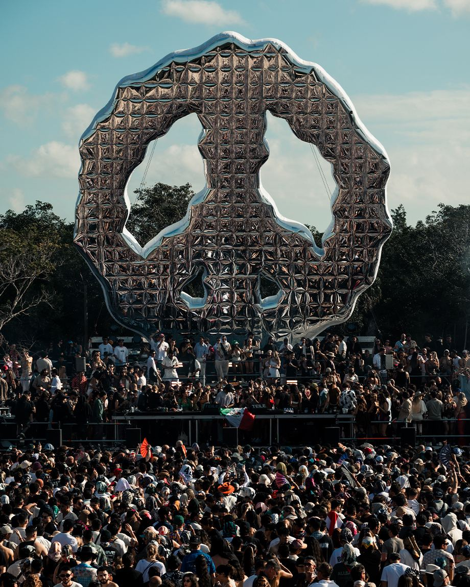

Festivals · Music
Zamna Tulum 2027 (10 Years)
- Dates
- –
- Location
- Tulum, Mexico
- Format
- In-person
- Category
- Music
- Industry
- Electronic music
- Organiser
- Zamna Festival
- Price
- Official Multipass page (23 Nov 2026): General Admission fourth phase USD 425.
- Official website
- https://www.zamnafestival.com/news/zamna-tulum-10-years
- Tickets
- https://www.zamnafestival.com/events/multipass-zamna-tulum-2027
About
10-day anniversary season of events. Tulum is on UTC-5. Mexico dates are local (Mexico City time, UTC-6, unless the venue is in another Mexican time zone).
Topics: electronic, techno, house.
No organiser attendance figure found on the official pages checked (23 Nov 2026). Ranked by an estimated size tier 'large' (about 10,000-100,000 attendees; our judgement from format, venue and scale, not an official number).